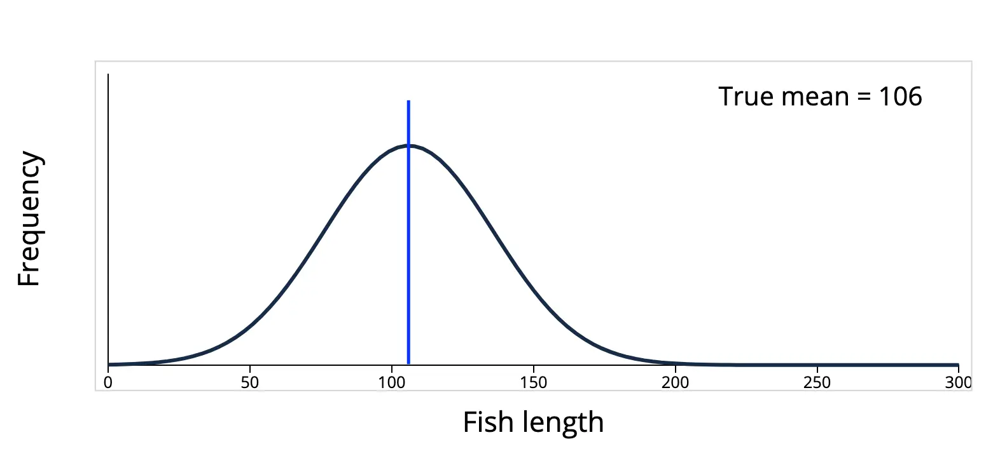
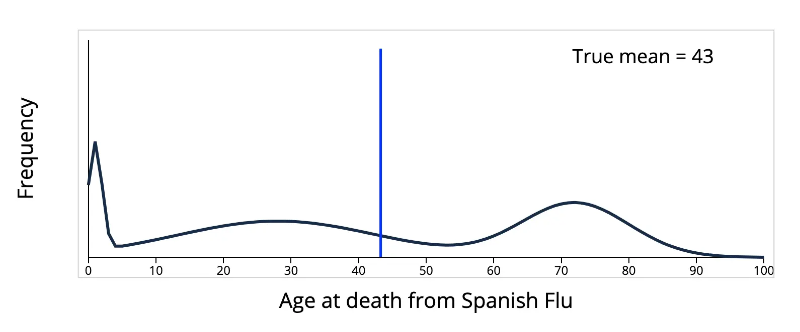

Math - 样本方差（sample variance）的分母为什么是 n - 1
本文最后更新于：2025年8月16日 下午
按照定义，方差的 estimator 应该是： \[ \begin{equation} S^2 = \frac{1}{n}\sum_{i = 1}^n\left(X_i - \overline{X}\right)^2 \label{eq:sample-variance} \end{equation} \] 但是这个 estimator 有 bias，因为： \[ \begin{align*} E(S^2) &= \frac{1}{n}\sum_{i = 1}^nE\left[\left(X_i - \overline{X}\right)^2\right] \\ &= \frac{1}{n}E\left[\sum_{i = 1}^n\left(X_i - \mu + \mu - \overline{X}\right)^2\right]\\ &= \frac{1}{n}E\left[\sum_{i = 1}^n\left(X_i - \mu\right)^2 - n \left(\overline{X} - \mu \right)^2\right] \\ &= \frac{1}{n} \left[\sum_{i = 1}^nE\left(\left(X_i - \mu\right)^2\right) - nE\left(\left(\overline{X} - \mu\right)^2\right)\right] \\ &= \frac{1}{n}\left[n\operatorname{Var}(X) - n\operatorname{Var}(\overline{X})\right] \\ &= \operatorname{Var}(X) - \operatorname{Var}(\overline{X}) \\ &= \sigma^2 - \frac{\sigma^2}{n} = \frac{n - 1}{n}\sigma^2 \end{align*} \]
关于 \(\operatorname{Var}(\overline{X}) = \frac{\sigma^2}{n}\) 的证明参考：Prove that \(E (\overline{X} - \mu)^2 = \frac{1}{n}\sigma^2\)
因此为了避免使用有 bias 的 estimator，通常使用它的修正值： \[ S^2 = \frac{1}{n - 1}\sum_{i = 1}^n\left(X_i - \overline{X}\right)^2 \] 这个时候就引出了问题，为什么分母是 \(n - 1\) 而不是 \(n - 2\) 或者 \(n - 3\) 之类的，又或者为什么一定要进行这个修正呢，不进行修正会造成什么后果。接下来我们就对这些问题进行分析。
正常情况下，如果已知随机变量 \(X\) 的期望为 \(\mu\)，那么可以按照下面这个公式计算方差 \(\sigma^2\)： \[ \sigma^2 = E\left[\left(X - \mu\right)^2\right] \] 但是在现实应用中往往不知道准确分布，也就无法得知 \(X\) 的具体分布是什么，计算起来也很复杂，因此在实践中经常采样之后，用下面的 \(S^2\) 来近似 \(\sigma^2\)： \[ S^2 = \frac{1}{n}\sum_{i = 1}^n\left(X_i - \mu\right)^2 \] 但是在现实中，往往连 \(X\) 的期望 \(\mu\) 也不清楚，只知道样本的均值： \[ \overline{X} = \frac{1}{n}\sum_{i = 1}^nX_i \] 那么就会按照公式 \(\eqref{eq:sample-variance}\) 来计算 \(S^2\)，其中 \(n - 1\) 是为了对自由度进行校正，这叫做贝塞尔校正（Bessel's correction），为什么是减掉 \(1\)，这是因为当我们计算出样本均值 \(\overline{X}\) 后，当我们再用公式 \(\eqref{eq:sample-variance}\) 计算样本方差的时候，我们只需要知道样本中任意 \(n - 1\) 个值（比如 \(X_1, X_2, \dots,X_{n -1}\)），我们就可以通过样本均值 \(\overline{X}\) 和这 \(n - 1\) 个值来计算得到剩下的那个值（比如这里是 \(X_n\)）。也就是说，当我们用样本均值 \(\overline{X}\) 来代替总体的期望 \(\mu\) 用于计算样本方差的时候，样本中就只剩下 \(n - 1\) 个独立不互相依赖的值（也就是所谓的“自由度”，Degrees of freedom），因为另外一个值可以通过样本均值 \(\overline{X}\) 和那 \(n - 1\) 个样本值通过计算得到。
自由度的意义就是要求这些变量（样本）之间是相互独立，互不干扰的。比如说多个专家在对一个项目的可行性进行评估的时候，如果刚好有一个专家是另外两个专家的上级，那么这两个专家难免会受到上级的影响（利益相关）从而做出的判断就不是独立于那个上级专家的判断，这样就造成了两个专家的“自由度”的丧失，从而导致最终结果出现偏差。
这也是为什么在统计实践中，需要通过减少偏差来提高数据的可信性，通过竭力避免样本数据之间各种各样的隐含的关联关系（比如样本均值 \(\overline{X}\) 和 \(n\) 个样本之间的关系 \(\overline{X} = \frac{1}{n}\sum_{i = 1}^nX_i\)）提高数据之间的独立性就是这样一种提高数据可信性的方法之一。而解决的策略也十分清晰，就是发现其中的隐含关系，然后通过校正来避免 bias。
那么自由度变小会对样本方差产生什么样的影响呢，答案是样本方差会变小。
我们知道，方差是通过计算样本和均值之间的距离来描述样本的分散程度，数据之间差异越大，方差越大，数据之间越是趋同，方差越小。在样本方差中，因为样本均值 \(\overline{X}\) 就是根据样本来计算的，让原本独立、随机的、没有偏差的样本数据，在计算加工过程中引入了偏差，减少了数据之间的差异性，这种趋同效应使得样本方差 \(S^2\) 变小了。
所以样本方差 \(S^2\) 公式里分母的 \(n - 1\) 减去的 \(1\) 是为了校正样本均值 \(\overline{X}\) 的引入所带来的偏差，它不是代表某一个样本，而是对自由度的补偿，让缩小的样本方差重新变大一点。这也是在推导过程中最终得到 \(\frac{n - 1}{n}\sigma^2\) 的一个直观理解。
样本方差偏小是不是采样出现问题？因为越接近平均值，就越容易被采样？从直觉上来说好像是这样的，比如下面的这个鱼类长度的分布，数据聚集在平均值 \(106\) （蓝线）附近，如果在这个群体中采样，在平均值周围的确有更大的概率被采样到。

但是，直觉是靠不住的，因为上面的分布只是现实世界复杂多样的分布中的一种，还有很多的分布，其数据不在平均值附近，而是分散在四处。例如，下面这个西班牙流感死亡年龄的分布：

数据并没有聚集在平均值 \(43\) 附近，如果采样，就会发现样本更大的概率是远离平均值，而不是在平均值附近。所以样本方差出现偏小的原因，并不是平均值附近被采样到的概率更大，这只是在部分情况下成立，在很多情况下并不成立。
总结一下，样本方差出现偏差的原因和采样无关，也和平均值附近更容易被采样无关，更好的解释是，计算过程中引入的样本平均值降低了样本的自由度，减少了数据的差异性，而我们通过贝塞尔校正使样本方差的分母为 \(n - 1\) 来弥补丢失的样本自由度，从而使得样本方差是无偏的（unbiased）。
参考资料
- 为什么样本方差（sample variance）的分母是 n-1？ 一个很好的回答，用多个例子通俗易懂地说明了样本方差的分母是 \(n - 1\) 的原因和偏差产生的原因